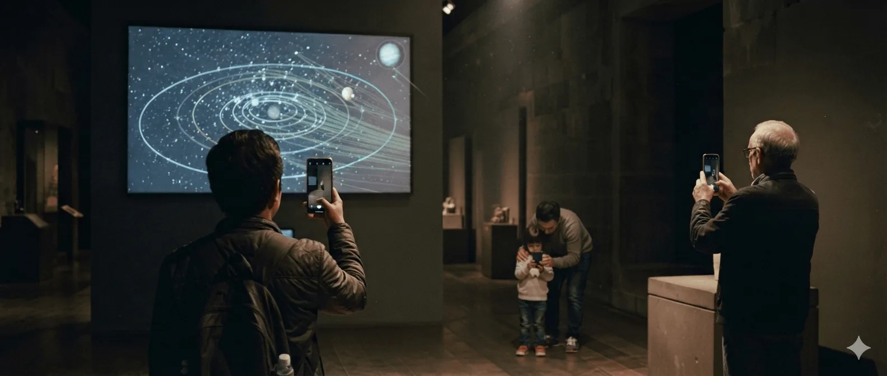

และมักไม่มีใครในองค์กรมองเห็นเส้นนั้น เพราะสองห้องอยู่คนละฝ่าย ใช้คำศัพท์คนละชุด และไม่เคยมีใครเขียนไว้ว่ามันเกี่ยวกันตรงไหน
การจะลากเส้นแบบนี้ให้เห็นทั้งองค์กร ต้องใช้วิธีการและเครื่องมือชุดใหม่ ออนโทโลยีและกราฟความรู้ทำให้ความสัมพันธ์ข้ามฝ่ายถูกเขียนลงไปได้จริงเป็นครั้งแรก แต่เครื่องมือไม่รู้ว่าอะไรควรต่อกับอะไร คนที่ใช้มันต้องเข้าใจการบริหารจัดการความรู้มากพอ จึงจะแยกออกว่าเส้นไหนมีความหมาย เส้นไหนแค่บังเอิญ
Neo Gens นำโดย นพดล วีรกิตติ มีประสบการณ์ด้านการบริหารจัดการความรู้มากว่าสามสิบห้าปี ผ่านงานเทคโนโลยีสารสนเทศ การออกแบบบริการ การพัฒนาธุรกิจ ห้องสมุดประชาชน และพิพิธภัณฑ์ สองปีหลังค้นคว้าศึกษาเรื่องการประยุกต์ใช้ AI, Ontology และ Knowledge Graph ในการบริหารจัดการความรู้อย่างจริงจัง ฟังดูเหมือนงานคนละเรื่อง แต่เป็นการทำงานกับคำถามเดิมทุกครั้ง ความรู้ที่องค์กรมี จะเดินออกมาถึงคนข้างนอกได้อย่างไร
ภาพข้างล่างแสดงตัวอย่างนิทรรศการดาราศาสตร์ที่ผู้ชมสามารถใช้ AR App สำรวจเส้นความรู้ที่เชื่อมโยงการเคลื่อนที่ของดวงดาวกับความรู้พื้นถิ่นได้ ตามระดับความเข้าใจและความสนใจของผู้ชมแต่ละคน

ผมผ่านการทำงานมากับหลายองค์กร และให้คำปรึกษาอีกหลายแห่ง ทุกครั้งที่องค์กรหนึ่งไปได้ดีหรือไปไม่รอด มันลงเอยที่เรื่องเดียวกัน คือองค์กรนั้นรู้หรือเปล่าว่าตัวเองรู้อะไรบ้าง และเอาสิ่งที่รู้ไปใช้เป็นไหม แม้กระทั่งในระดับบุคคลก็เรื่องเดียวกัน
วันนี้เรื่องนี้ยิ่งสำคัญ ในวันที่ AI ทำให้ทุกคนเข้าถึงคำถามคำตอบที่เป็นความรู้สาธารณะได้เท่าเทียมกัน ความได้เปรียบจากการเข้าถึงความรู้ทั่วไปกลายเป็นสิ่งธรรมดา
สิ่งที่ทำให้เกิดความแตกต่างคือความรู้ที่อยู่ในองค์กร โดยเฉพาะองค์กรที่นั่งอยู่บนวัตถุดิบความรู้ที่ถูกสั่งสมมายาวนานอย่างพิพิธภัณฑ์และห้องสมุด มีความได้เปรียบจากต้นทุนความเชื่อถือที่สาธารณะมีให้มากกว่าองค์กรอื่น ๆ
คนเชื่อพิพิธภัณฑ์ คนเชื่อห้องสมุด ในฐานะสถาบันที่เป็นผู้นำด้านการบริหารจัดการความรู้ของโลกมายาวนาน เป็นความเชื่อที่ผ่านการสะสมมาเป็นร้อยปี
สิ่งที่ผู้คนคาดหวังจากพิพิธภัณฑ์และห้องสมุด จึงไม่ใช่เพียง chatbot ที่ตอบคำถามพื้น ๆ ได้เหมือนที่อื่น แต่เป็น ผู้ช่วยความรู้ส่วนบุคคล (personal knowledge assistant) ที่ช่วยให้ผู้ชมแต่ละคนสามารถขยายและเชื่อมโยงสิ่งที่ตัวเองรู้ กับสิ่งที่อยู่ในนิทรรศการ ในคอลเลกชัน และในวัตถุตรงหน้า ช่วยสร้างบทสนทนาใหม่ ๆ ในแต่ละย่างก้าว แล้วเดินออกไปพร้อมความเป็นไปได้ใหม่ ๆ ในทุกครั้งที่มาเยี่ยมเยือน
นั่นคือเป้าหมายของสิ่งที่เราเรียกว่า Modern Knowledge Management และเราสร้างมันคนเดียวไม่ได้ จึงอยากชวนสถาบันที่ทำงานด้านการบริหารจัดการความรู้สมัยใหม่ อย่างพิพิธภัณฑ์และห้องสมุดที่คิดแบบเดียวกัน มาสร้างไปด้วยกัน
ชั้นความรู้พังตรงรอยต่อเสมอ ภัณฑารักษ์เรียกของชิ้นหนึ่งอย่างหนึ่ง นักอนุรักษ์เรียกอีกอย่าง หอจดหมายเหตุใช้คำที่สาม ส่วนระบบคลังข้อมูลรับได้แค่คำที่ตั้งไว้ตั้งแต่ปี 2541 คนที่อยู่ฝ่ายเดียวมองไม่เห็นรอยต่อพวกนี้ ออนโทโลยีสำเร็จรูปยิ่งไม่รู้ว่าทั้งสี่ฝ่ายเห็นไม่ตรงกัน
ชื่อบริษัทมาจากทั้งสองครึ่งของเรื่องนี้ Neo Gens คือส่วนผสมระหว่าง neo-generalist กับ neo-generation
neo-generalist คือคนที่เดินไปมาระหว่างความรู้ลึกกับความรู้กว้าง ไม่ยอมหยุดอยู่ปลายใดปลายหนึ่ง และสร้างคุณค่าจากการต่อเรื่องข้ามสาขา มากกว่าจากความลึกในสาขาเดียว ส่วนอีกครึ่งคือคนที่งานนี้ทำให้ คนรุ่นที่จะถาม AI ก่อนถามพิพิธภัณฑ์หรือห้องสมุด และองค์กรรุ่นที่ต้องพร้อมเมื่อวันนั้นมาถึง
นี่เป็นวิธีทำงานก่อนจะเป็นปรัชญา และเป็นเหตุผลว่าทำไมเราเริ่มจากคำถามที่ข้ามฝ่ายเสมอ
Neo Gens ไม่ใช่สำนักวิชาการ ทุกบรรทัดข้างล่างเป็นโจทย์ธุรกิจ หรือโจทย์ความรับผิดชอบต่อสาธารณะก่อน แล้วค่อยเป็นโจทย์ความรู้ทีหลัง มีงบที่ต้องปกป้อง มีคนดูที่ต้องดึงกลับมา มีคณะกรรมการที่ต้องตอบให้ได้ ที่ปรึกษาด้านการจัดการความรู้ส่วนใหญ่ข้ามครึ่งนี้ไป และมันคือครึ่งที่ตัดสินว่างานจะรอดไหมเมื่อลงไปเจอของจริง
90 นาที เชิญภัณฑารักษ์หรือบรรณารักษ์ของคุณมาด้วย พร้อมคำถามหนึ่งข้อที่องค์กรตอบไม่ได้
หรือติดต่อโดยตรงที่ hello@neogens.co